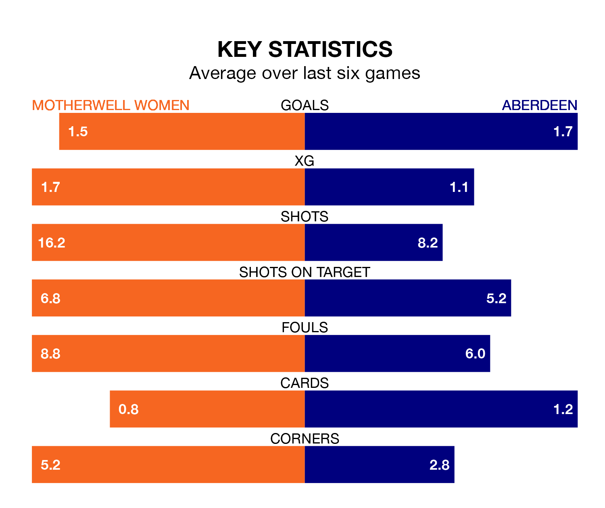

Motherwell Women host Aberdeen on Sunday at K Park Training Academy in SWPL 1.
In their last league match, on March 17, Motherwell beat Hamilton Academical 4-0 away, with goals from Amy Louise Anderson, Bailley Collins, Louisa Boyes and Morgan Cross.
Aberdeen also won, 2-0 at home against Spartans Women, with Bayley Hutchison and Hannah Stewart on the scoresheet.
In the last 10 years, Motherwell and Aberdeen have played each other on 10 occasions. Motherwell won six of them and Aberdeen four.
On average, Motherwell scored 2.4 goals and Aberdeen 2.1 in those matches.
Their last meeting was on November 5, when Aberdeen won 5-2 away.
With 34 goals in 23 games so far this season, Motherwell are scoring at below the league average rate with 1.5 goals per game. And they are conceding more than average, letting in 56 goals at a rate of 2.4 per game.
Aberdeen are also below average scorers, with 1.6 goals per game, compared to a league average of 2.1. They have conceded 3.1 goals per game.
In Hutchison, the away side have one of the league's most on-form strikers so far this season. She has notched 17 goals in 23 appearances, to sit fourth in the scoring charts.
Her goal rate of one every 116 minutes is quicker than that of Carla Boyce, the hosts' top scorer with a goal every 172 minutes, and a total of eight goals in 23 games.
Motherwell are in disappointing form in SWPL 1, with two wins and four losses from their last six games.
With three wins and three losses over that period, Aberdeen's form is better – they have taken nine points from 18, compared to Motherwell's six.
The home team are eighth in the table after 23 games, of which they have won seven and drawn one, earning 22 points.
Aberdeen are one place ahead of Motherwell in seventh, with nine wins and one draw putting them on 28 points.
Updated: 10:31 (UTC), 31/03/24